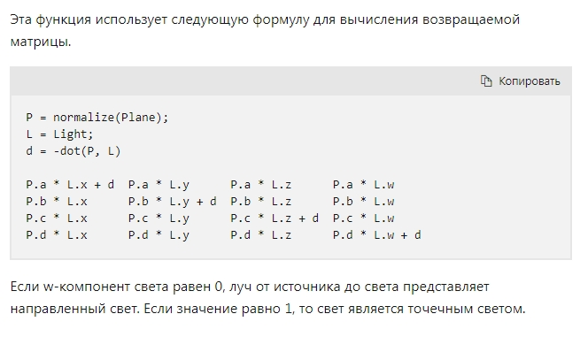
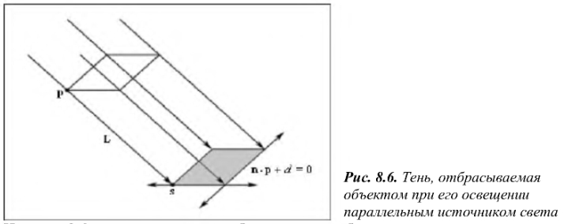
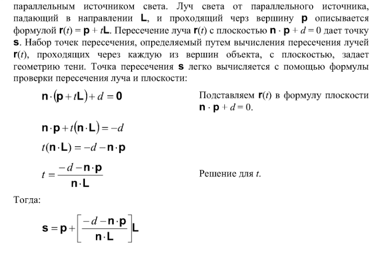
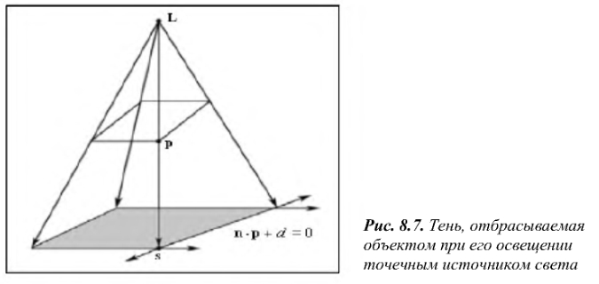
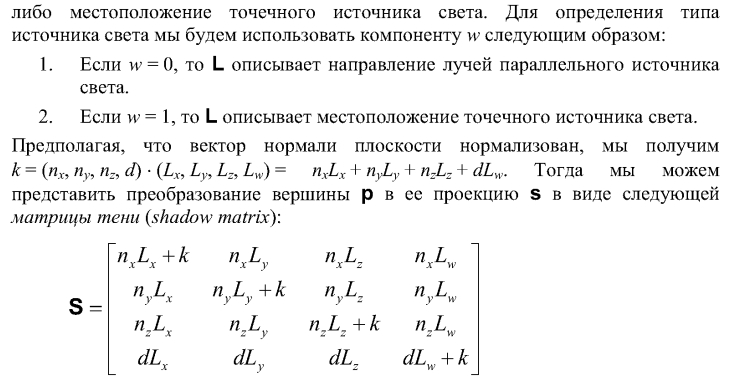

Загрузить архив с примерами ЗДЕСЬ.
Описание функции D3DXMatrixShadow приведено ниже, это функция из библиотеки DirectX9. Почитать на сайте MSDN можно по ссылке: D3DXMatrixShadow
    Код примера для паралельного и точеченого источника света можно загрузить /src/02.008-shadow/Solid_Cube1_MatrixShadow.
Так же пример (для проверки) для точечного источника света, использовалась функция DirectX9 D3DXMatrixShadow. Код примера можно загрузить /src/02.008-shadow/Solid_Cube1_MatrixShadow_DX9Shadow.
Более подробно об этом можно почитать в книге Франка Луны Введение в программирование трехмерных игр с DirectX 9.0 за 2003 год.
Матрица тени полный расчет показан ниже, используется 4х компонентный вектор x,y,z,w.
Если используется матрица тени для паралельного источника света, то для lightDirection w компонента должна быть 0, и вектор должен быть нормализован, например так:
D3DXVECTOR4 lightDirection(0.707f, -0.707f, 0.707f, 0.0f);
Если используется матрица тени для точечного источника света, то для lightDirection w компонента должна быть равна 1.0f и вектор должен содержать не нормализованные координаты, например так:
D3DXVECTOR4 lightDirection(100.0f, -100.0f, 0.100f, 1.0f);
//D3DXVECTOR4 lightDirection(100.0f, -100.0f, 0.100f, 1.0f); D3DXVECTOR4 lightDirection(0.707f, -0.707f, 0.707f, 0.0f); D3DXVECTOR4 groundPlane(0.0f, -1.0f, 0.0f, 0.0f); float k = D3DXVec4Dot(&groundPlane, &lightDirection); D3DXMATRIX S = D3DXMATRIX( k - groundPlane.x * lightDirection.x, -groundPlane.x * lightDirection.y, -groundPlane.x * lightDirection.z, -groundPlane.x * lightDirection.w, -groundPlane.y * lightDirection.x, k - groundPlane.y * lightDirection.y, -groundPlane.y * lightDirection.z, -groundPlane.y * lightDirection.w, -groundPlane.z * lightDirection.x, -groundPlane.z * lightDirection.y, k - groundPlane.z * lightDirection.z, -groundPlane.z * lightDirection.w, -groundPlane.w * lightDirection.x, -groundPlane.w * lightDirection.y, -groundPlane.w * lightDirection.z, k - groundPlane.w * lightDirection.w );
//D3DXVECTOR4 lightDirection(100.0f, -100.0f, 0.100f, 1.0f); D3DXVECTOR4 lightDirection(0.707f, -0.707f, 0.707f, 0.0f); D3DXVECTOR4 groundPlane(0.0f, -1.0f, 0.0f, 0.0f); float k = -D3DXVec4Dot(&groundPlane, &lightDirection); S = D3DXMATRIX( groundPlane.x * lightDirection.x + k, groundPlane.x * lightDirection.y, groundPlane.x * lightDirection.z, groundPlane.x * lightDirection.w, groundPlane.y * lightDirection.x, groundPlane.y * lightDirection.y + k, groundPlane.y * lightDirection.z, groundPlane.y * lightDirection.w, groundPlane.z * lightDirection.x, groundPlane.z * lightDirection.y, groundPlane.z * lightDirection.z + k, groundPlane.z * lightDirection.w, groundPlane.w * lightDirection.x, groundPlane.w * lightDirection.y, groundPlane.w * lightDirection.z, groundPlane.w * lightDirection.w + k); }